Visualizing Training and Sampling
Flow models use a straight line between noise and an image: x_t = (1 − t)·ε + t·x₁. At t = 0 we have pure noise, and at t = 1 we have the clean image. The model learns the velocity along that line, x₁ − ε, so generating an image means following that velocity from noise up to t = 1. All of Section 1 uses one photo of me in my Cal hockey jersey, with the prompt “a high quality photo” and seed 180.
1.1 Constructing Noisy Training Inputs
The forward process is just interpolation. I sampled one noise tensor and reused it at t = 0.25, 0.50, and 0.75. I also checked both endpoints: t = 0 gives back exactly the noise, and t = 1 gives back exactly the image.
def interpolate(image, noise, t):
return noise*(1-t) + image*(t)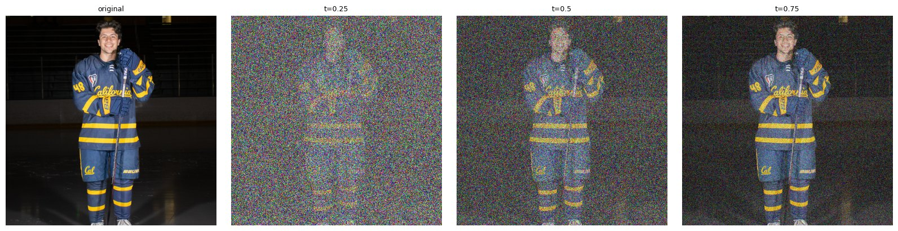
1.2 Classical Denoising
As a baseline, we can denoise without the model at all. I divided each noisy image by t to restore the image's brightness, then applied a gaussian blur. The cell tries σ = 1, 2, 4, 8, 16 and keeps whichever has the lowest MSE against the real image. Blurring removes the noise, but it removes the detail along with it. The noisier the input, the blurrier the best result.
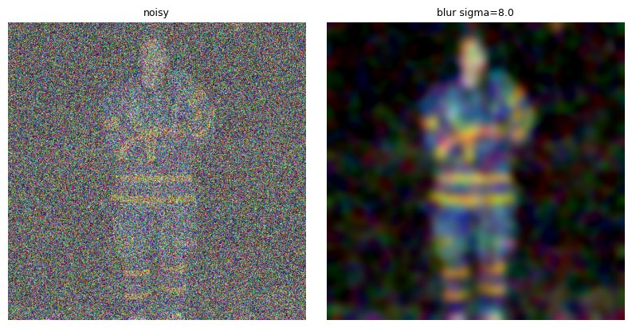
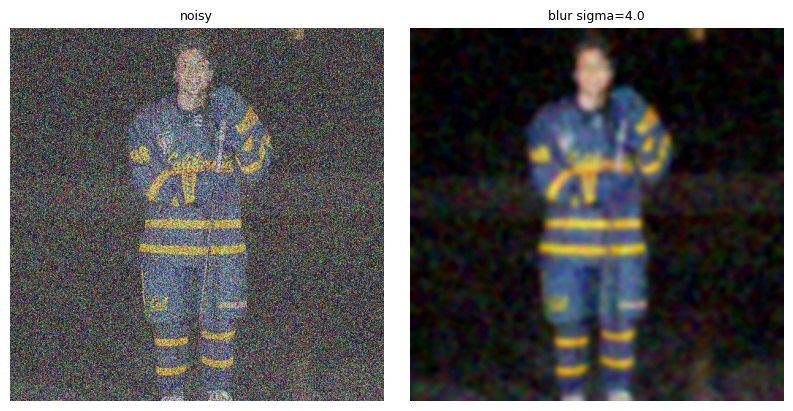
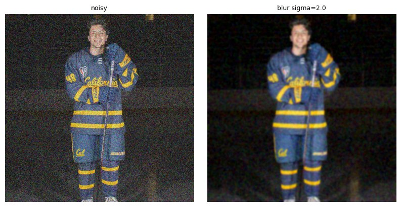
1.3 One-Step Denoising
The model predicts a velocity v from xt. Since the remaining distance to t = 1 is (1 − t), one jump gets us an estimate of the clean image: x̂₁ = x_t + (1 − t)·v. That is a single call to the model per image.
def one_step_denoise(x, t, condition, predict_velocity):
v0 = predict_velocity(x, t, condition)
return x + (1-t)*v0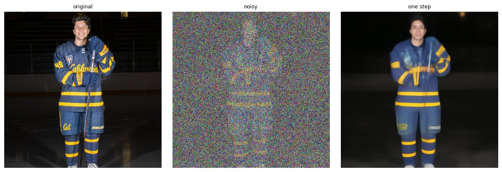
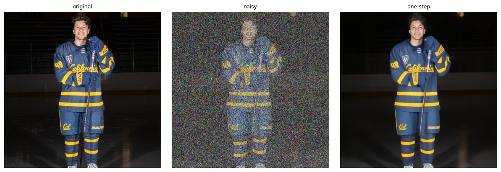
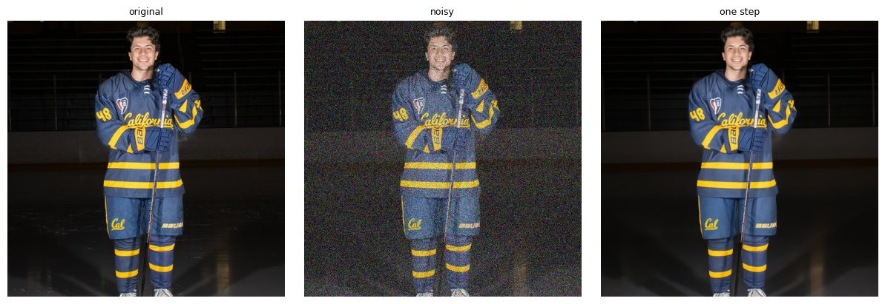
This is much better than the blur, even at t = 0.25. The one-step result is still softer than the original, however. With that much noise the model can not tell exactly what was there, so it predicts something closer to an average.
1.4 Visualizing Velocity
Here I compared the update the model adds, (1 − t)·v̂, against the update that would recover my actual photo, (1 − t)·v_gt = x₁ − x_t. The error map is the RMS across RGB at each pixel. Both updates use the same signed color scale, with gray at zero, and all three error maps share one linear scale.
def velocity_diagnostics(x_t, t, clean_image, epsilon, condition, predict_velocity):
v_hat_t = predict_velocity(x_t, t, condition)
v_gt = (clean_image - x_t)/(1-t) # equals clean_image - epsilon
predicted_update = (1-t)*v_hat_t
ground_truth_update = (1-t)*v_gt
# square per channel, average over RGB only, then sqrt
error_map = torch.sqrt(torch.mean(((1-t)*(v_hat_t - v_gt))**2, dim=1))
return predicted_update, ground_truth_update, error_map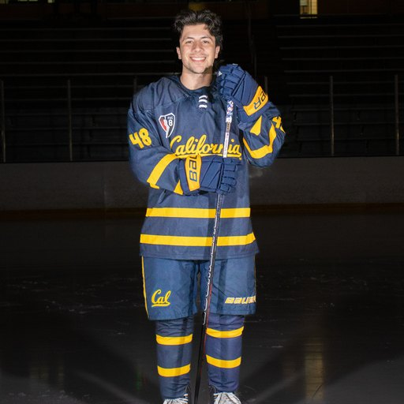
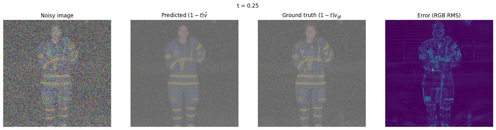
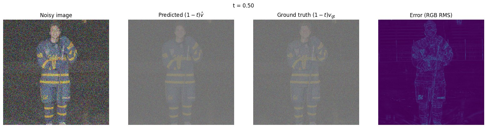
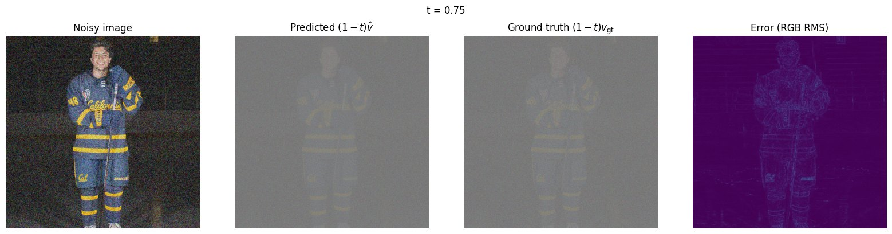
The ground truth update has to remove every grain of noise exactly, so it looks grainy. The predicted update is smoother, since the model can not know the exact noise sample that was drawn. The error is brightest along edges and fine details like the jersey lettering, which are the parts that are hardest to recover from noise. The error also shrinks as t increases, because there is less noise left to undo.
1.5 Iterative Denoising with Euler Sampling
Instead of one big jump, Euler sampling takes small steps, x ← x + h·v(x, t), and asks the model for a new velocity at each one. I shorten the last step so it lands exactly on t = 1. Starting from the t = 0.50 input with h = 0.02, that is 25 updates. All three toy checks passed: 50 steps from t = 0, 25 from t = 0.5, and 4 from t = 0.93 with a shortened last step.
@torch.inference_mode()
def euler_sample(x_start, t_start, step_size, velocity):
x = x_start
t = t_start
states = [(t, x)]
while t + step_size < 1:
x = x + step_size * velocity(x, t)
t += step_size
states.append((t, x))
remaining_t = 1 - t # shortened final step
x = x + remaining_t * velocity(x, t)
states.append((1, x))
return x, states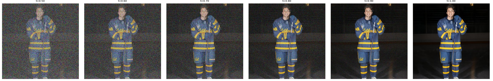
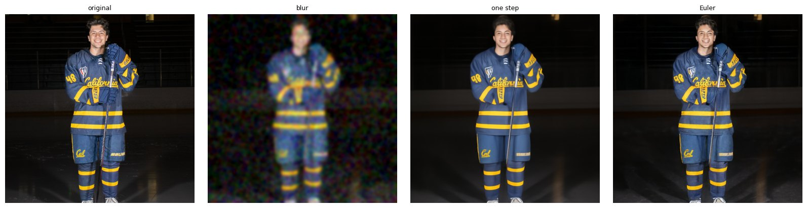
| Method (t = 0.50) | MSE to original |
|---|---|
| Gaussian blur | 0.0205 |
| One step | 0.0057 |
| Euler (25 steps) | 0.0066 |
Why does Euler look the sharpest, but score a slightly worse MSE than one step? MSE rewards playing it safe. A smooth average guess is never far off at any pixel, while Euler commits to crisp detail, and anywhere that detail does not match my real photo exactly counts against it. Both are far better than the blur.
1.6 Generating Images from Noise
Starting from pure noise at t = 0 and running all 50 Euler updates generates images from scratch. These use five independent noises, seeds 180–184, and the prompt “a high quality photo”.
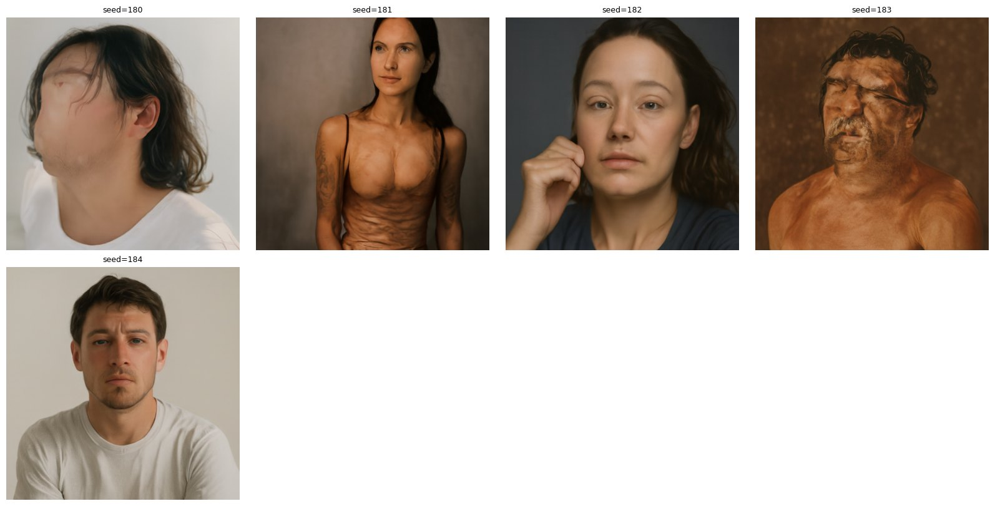
Classifier-Free Guidance
CFG computes two velocities at the same x and t: one with the prompt (vc) and one with the empty prompt (vu). It then pushes past the conditional one in the direction the prompt points: v_cfg = v_c + w·(v_c − v_u). With w = 0 this reduces to the plain conditional prediction, and I checked that it does. These samples use w = 7 and the same five noises as 1.6.
def cfg_velocity(x, t, condition, w, predict_velocity, null_condition):
v_c = predict_velocity(x, t, condition)
v_u = predict_velocity(x, t, null_condition)
return v_c + w*(v_c - v_u)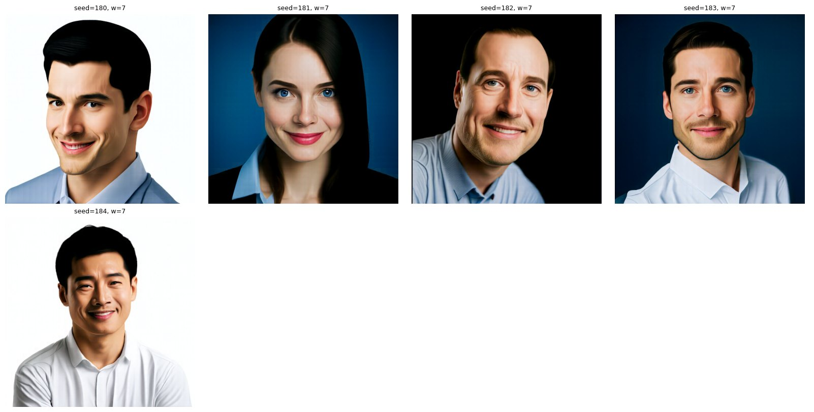
Creative Applications
Everything here uses h = 0.02, w = 7, and the empty prompt for the unconditional branch.
3.1 Image-to-Image Editing
To edit an image, we noise it partway with interpolate up to some tstart, then run the guided Euler sampler from there to 1. tstart controls how much of the original image survives. At 0.02 it is 98% noise, so the model basically draws a new picture. At 0.50 it only has to clean up the details.
def edit(image, noise, t_start, condition, predict_velocity, w=7, step_size=0.02):
start = interpolate(image, noise, t_start)
v = lambda x, t: cfg_velocity(x, t, condition, w, predict_velocity, null_condition)
x, states = euler_sample(start, t_start, step_size, v)
return xEach panel shows the original, then tstart = 0.02, 0.04, 0.06, 0.10, 0.14, 0.25, 0.50.
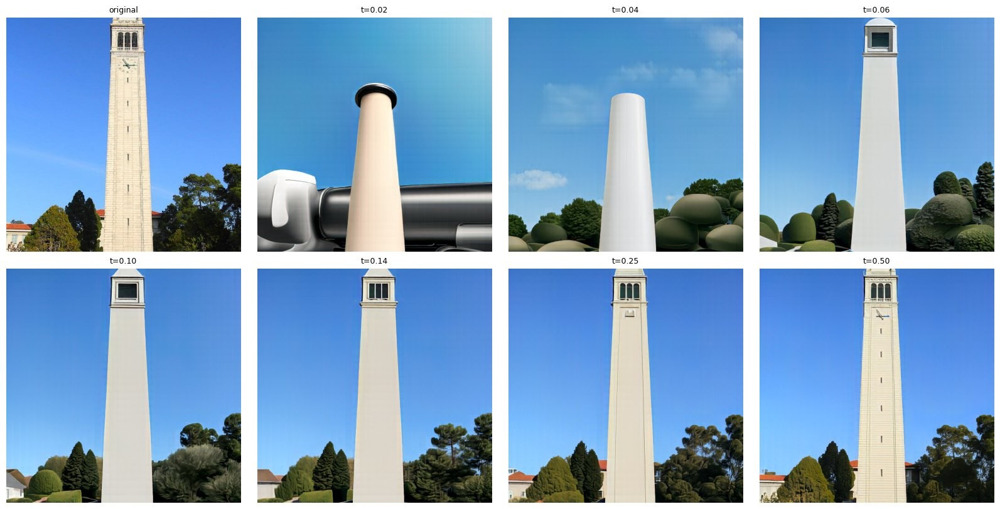
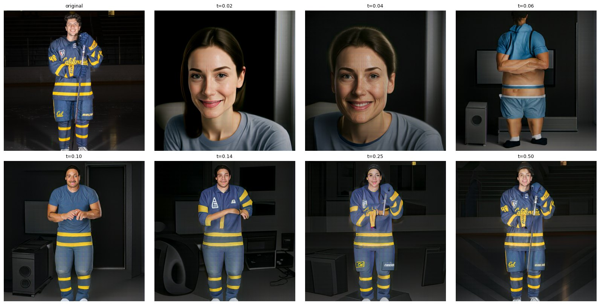
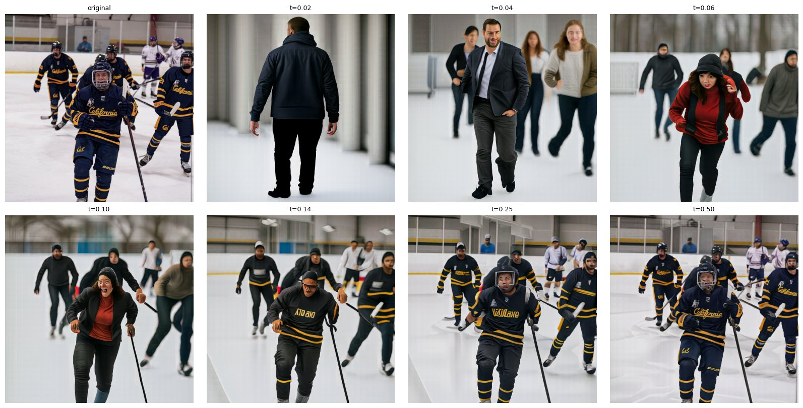
Web image and hand drawings
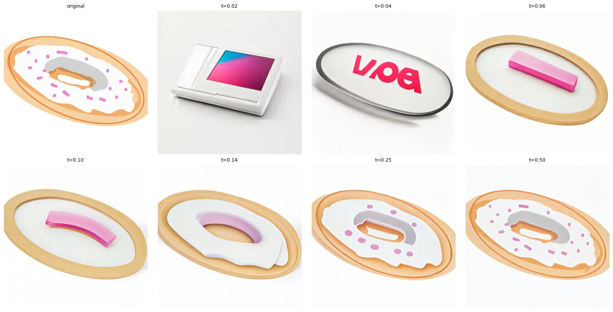
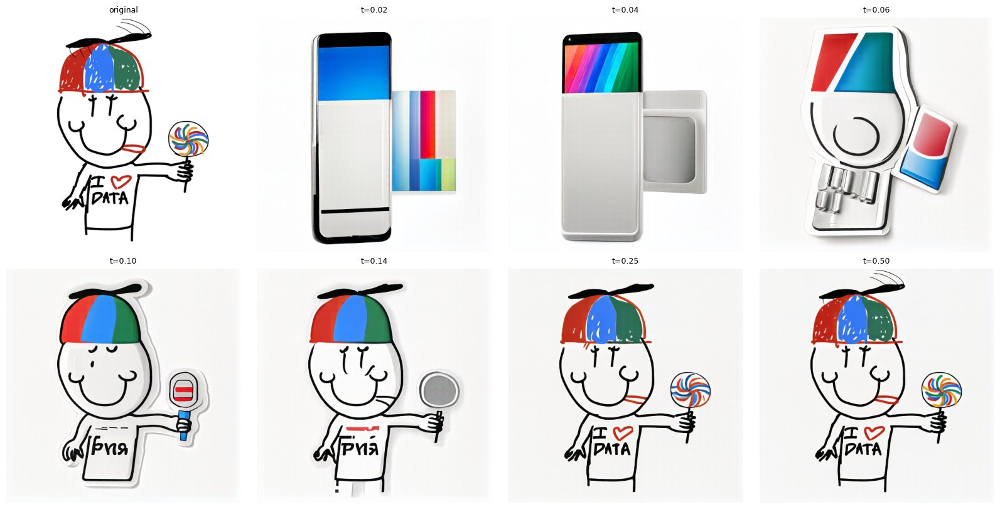
3.2 Text-Guided Image Editing
This is the same procedure, but with a prompt describing the edit in place of “a high quality photo”. Small tstart gives the prompt full control, and large tstart keeps the original.
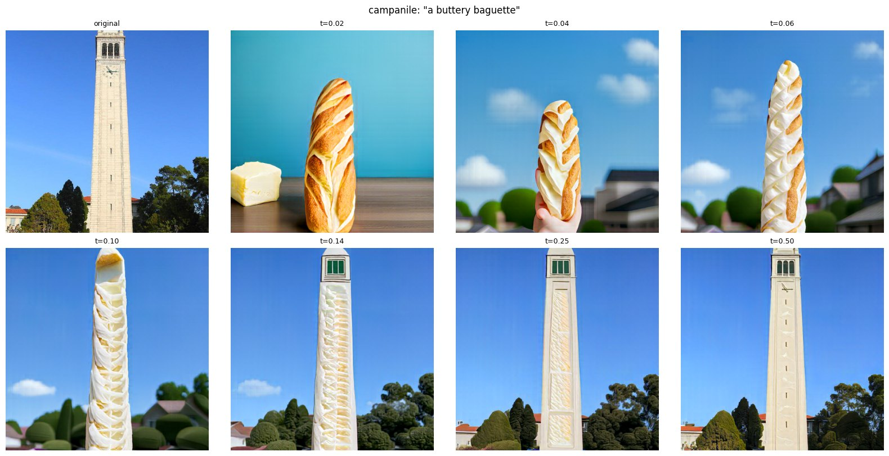
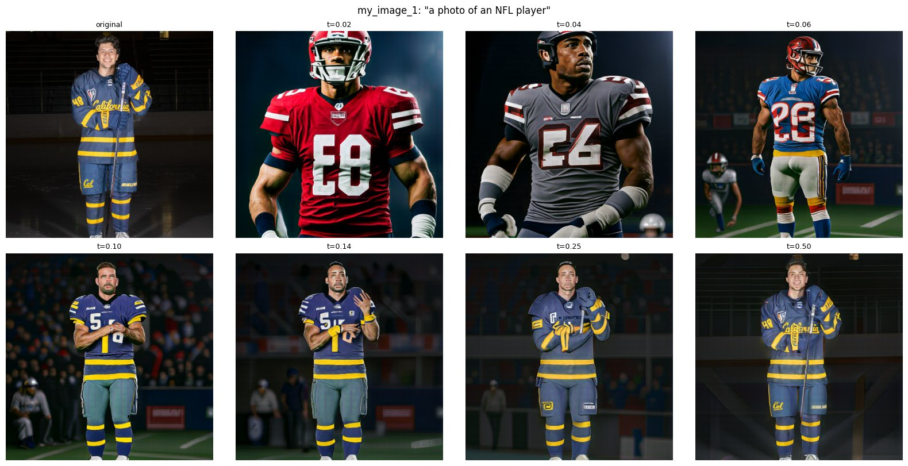
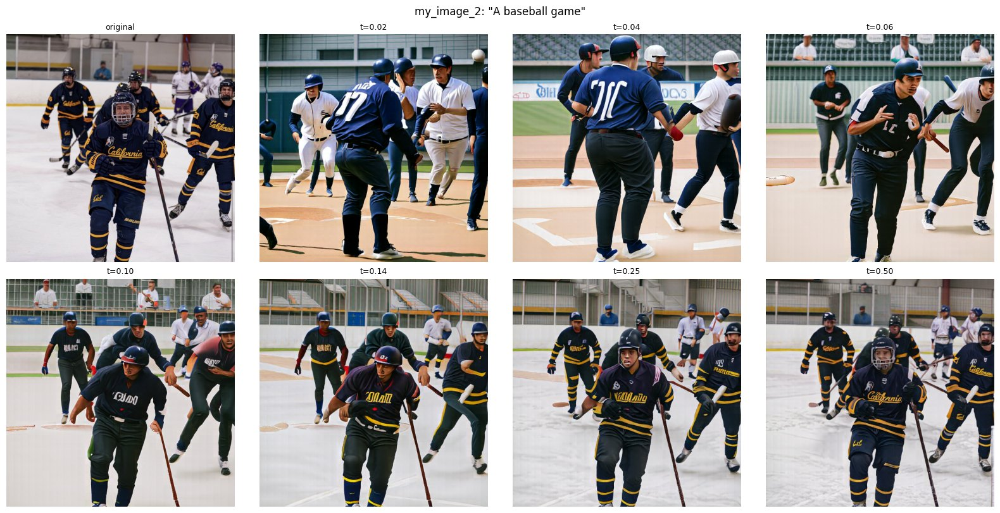
3.3 Visual Anagrams
A visual anagram looks like one thing upright and another thing upside down. At each step we average two velocities. The first is the normal CFG velocity for prompt A. The second rotates the image 180°, takes the CFG velocity for prompt B, and rotates that velocity back so its pixels line up with the upright image.
def visual_anagrams(noise, condition_a, condition_b, predict_velocity, w=7, step_size=0.02):
v = lambda x, t: (cfg_velocity(x, t, condition_a, w, predict_velocity, null_condition)
+ rotate180(cfg_velocity(rotate180(x), t, condition_b, w,
predict_velocity, null_condition))) / 2
x, _ = euler_sample(noise, 0, step_size, v)
return x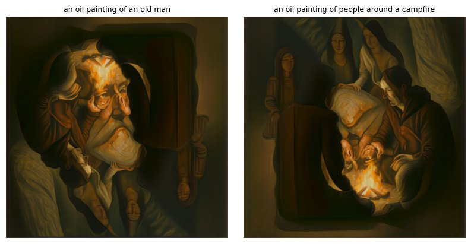
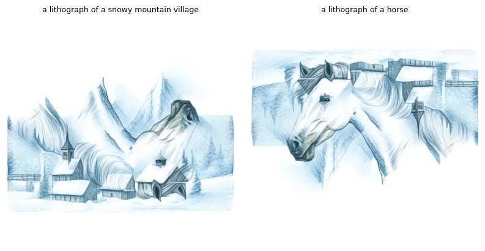
3.4 Hybrid Images
This is the Project 2 idea, but done inside the sampler. At each step the velocity takes the low frequencies of prompt A and the high frequencies of prompt B: lowpass(v_a) + v_b − lowpass(v_b). The lowpass is a gaussian with σ = 16. Up close you see B, and from far away, shown here at 64 × 64, only A's coarse shape is left.
def make_hybrids(noise, condition_a, condition_b, predict_velocity, w=7, step_size=0.02):
def v(x, t):
v_a = cfg_velocity(x, t, condition_a, w, predict_velocity, null_condition)
v_b = cfg_velocity(x, t, condition_b, w, predict_velocity, null_condition)
return lowpass(v_a) + v_b - lowpass(v_b)
x, _ = euler_sample(noise, 0, step_size, v)
return xTraining a Single-Step Denoising UNet
1.1 Implementing the UNet
Every building block wraps PyTorch layers in an nn.Sequential. Conv is a 3×3 conv, then BatchNorm, then GELU, and it keeps the size. DownConv uses stride 2 to halve the size, and UpConv uses a 4×4 stride-2 transpose conv to double it. Flatten average-pools 7×7 down to 1×1, and Unflatten uses a 7×7 stride-7 transpose conv to go back. The composed blocks just stack these, so a DownBlock is a DownConv followed by a ConvBlock.
x0 = self.conv1(x) # D, 28x28
x1 = self.down1(x0) # D, 14x14
x2 = self.down2(x1) # 2D, 7x7
x3 = self.flatten1(x2) # 2D, 1x1
x4 = self.unflatten1(x3) # 2D, 7x7
x5 = torch.cat([x2, x4], dim=1) # skip connection -> 4D
x6 = self.up1(x5) # D, 14x14
x7 = torch.cat([x1, x6], dim=1) # 2D
x8 = self.up2(x7) # D, 28x28
x9 = torch.cat([x0, x8], dim=1) # 2D
x10 = self.conv2(x9) # D
return self.conv2d(x10) # back to 1 channel1.2 The Noising Process
The denoiser is trained on z = x + σ·ε. This shows the same five test digits at σ = 0, 0.2, 0.4, 0.5, 0.6, 0.8, 1.0. Read it left to right: each run of five is one σ, so the grid wraps every two noise levels.
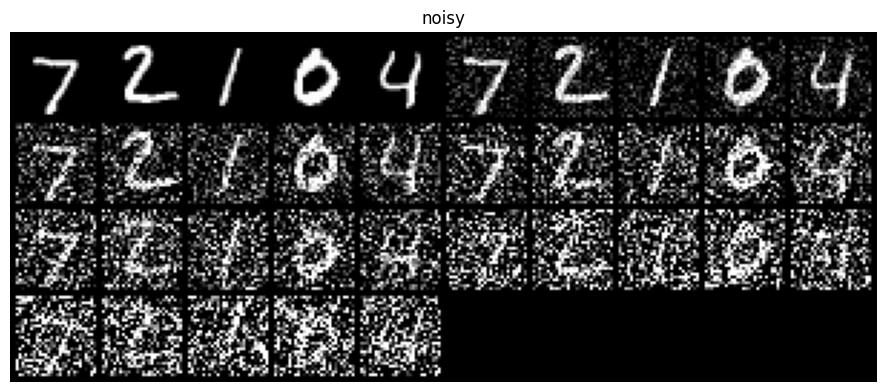
1.2.1 Training
Training setup: σ = 0.5, D = 128, batch size 256, Adam with lr = 1e-4, and 5 epochs on the shuffled MNIST training set. The loss is MSE between the denoised output and the clean digit. Fresh noise is drawn for every batch, so the model never sees the same noisy image twice.
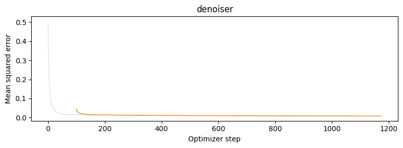
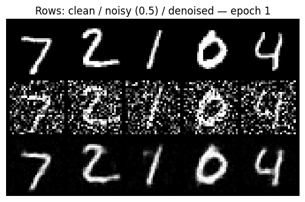
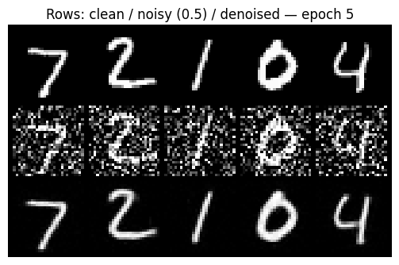
1.2.2 Out-of-Distribution Testing
The denoiser only ever saw σ = 0.5. Here it gets the same test digits at every noise level. The top seven rows are the noisy inputs (σ = 0 → 1.0) and the bottom seven are the outputs in the same order.
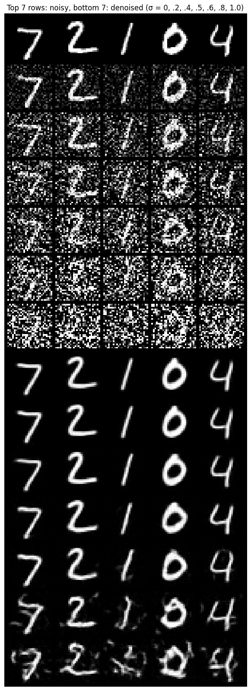
1.2.3 Denoising Pure Noise
This is the same setup as before, a fresh D = 128 UNet for 5 epochs with lr = 1e-4 and batch 256, but now the input is pure gaussian noise and the target is still a clean digit.
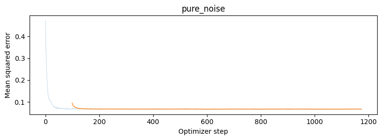
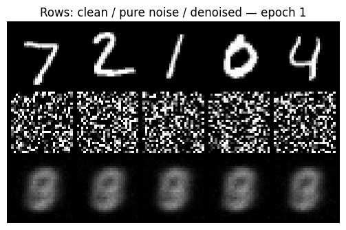
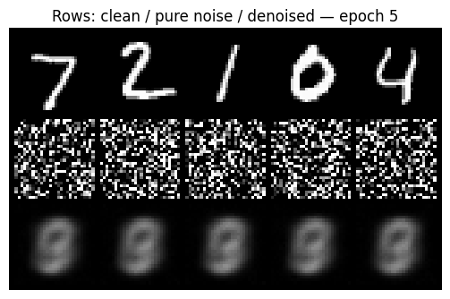
Why every output is the same blur
Every output is the same blurry blob, roughly a 0, 8, and 3 overlaid on each other, no matter which digit was the target. The input noise carries no information about the target digit, so the model can not learn which one to produce. Under MSE, the best single guess for an unknown target is the average of all of them, which is the centroid of the training set. So the model learns to output the mean MNIST digit for any input. It is thickest where most digits have ink, which is the center ring.
Flow Matching
The single-step denoiser fails on pure noise because it tries to jump straight to the answer. Flow matching fixes that by learning the velocity at every t along the path from noise to data. It then generates by taking many small steps, just like the Euler sampler in Part A.
2.1 Time-Conditioned UNet
t enters the network through two FCBlocks, each one a Linear, then a GELU, then another Linear. Their outputs scale the feature maps after unflatten, which has 2D channels, and after up1, which has D. Each FCBlock outputs one number per channel, reshaped to (N, C, 1, 1) so that it broadcasts across the whole feature map.
t_in = t[:, None] # (N,) -> (N, 1)
...
x4 = self.unflatten1(x3)
x4 = x4 * self.fcb1(t_in)[:, :, None, None] # FCBlock(1, 2D)
...
x6 = self.up1(x5)
x6 = x6 * self.fcb2(t_in)[:, :, None, None] # FCBlock(1, D)def time_fm_forward(unet, x_1, num_ts):
noise = torch.randn_like(x_1)
t = torch.rand(x_1.shape[0], device=x_1.device) # t ~ U[0, 1], one per image
x_t = interpolate(x_1, noise, t[:, None, None, None])
prediction = unet(x_t, t)
return F.mse_loss(prediction, x_1 - noise) # target is the velocity
def time_fm_sample(unet, img_wh, num_ts, seed=0):
torch.manual_seed(seed)
x = torch.randn(64, 1, *img_wh, device=device)
for step in range(num_ts):
t = torch.full((x.shape[0],), step/num_ts, device=x.device)
x = x + (1/num_ts) * unet(x, t)
return x2.2 Training the Time-Conditioned UNet
Training setup: D = 64, batch size 64, Adam with lr = 1e-2, and an ExponentialLR scheduler with γ = 0.11/10, stepped once per epoch, for 10 epochs. The scheduler lowers the learning rate from 1e-2 to 1e-3 over training: big steps early, fine adjustments late.
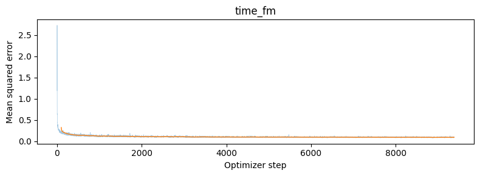
2.3 Sampling from the Time-Conditioned UNet
64 samples with 50 Euler steps, from the same seed at every checkpoint.
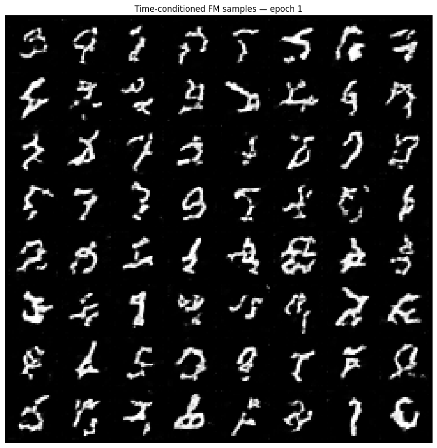
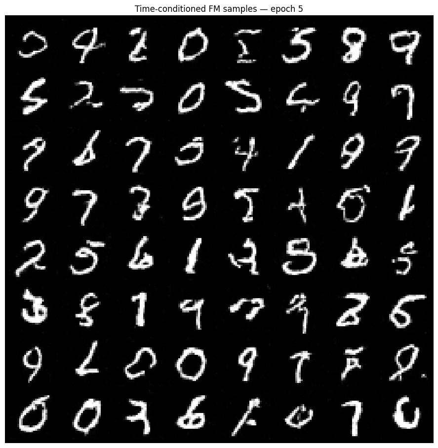
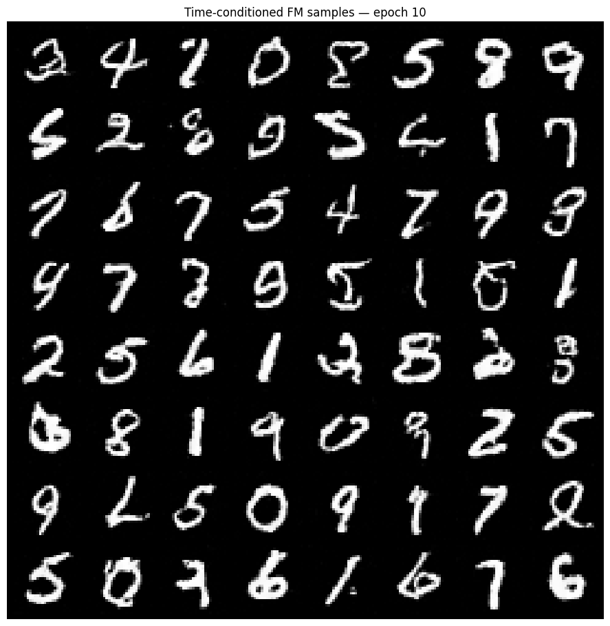
2.4 Class-Conditioned UNet
To pick which digit to draw, the class is fed in as a one-hot vector through two more FCBlocks. Following the pseudocode, the class embedding scales the features and the time embedding shifts them: unflatten = c1·unflatten + t1 and up1 = c2·up1 + t2. During training, 10% of the time (puncond = 0.1) the one-hot is zeroed, so the same network also learns an unconditional model. That is what makes CFG possible at sampling time. Part B's guidance uses v_u + γ·(v_c − v_u) with γ = 5.
# training (Algorithm 3)
mask = (torch.rand(x_1.shape[0], device=x_1.device) >= p_uncond).float()
prediction = unet(x_t, c, t, mask) # inside the UNet: c_in = one_hot(c) * mask
loss = F.mse_loss(prediction, x_1 - noise)
# sampling (Algorithm 4)
for step in range(num_ts):
t = torch.full((x.shape[0],), step/num_ts, device=x.device)
v_c = unet(x, c, t, ones)
v_u = unet(x, c, t, zeros)
v = v_u + guidance_scale*(v_c - v_u)
x = x + (1/num_ts)*v2.5 Training the Class-Conditioned UNet
Training setup: D = 64, batch size 64, Adam with an initial lr = 1e-2, ExponentialLR with γ = 0.11/10, and 10 epochs, with checkpoints at epochs 1, 5, and 10. For the comparison run I removed the scheduler and used a constant lr = 1e-3. That is the rate the scheduled run ends at, and it is stable enough to train without any decay.
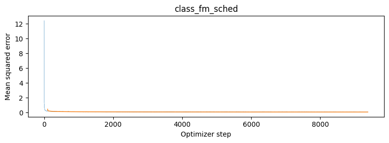
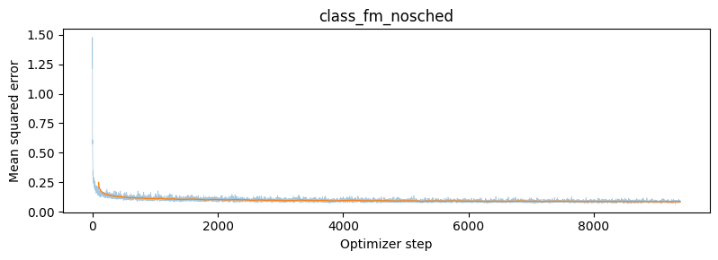
2.6 Sampling from the Class-Conditioned UNet
Four of each digit (rows 0–9), 300 Euler steps, γ = 5, with a fixed seed so every grid starts from the same noise.
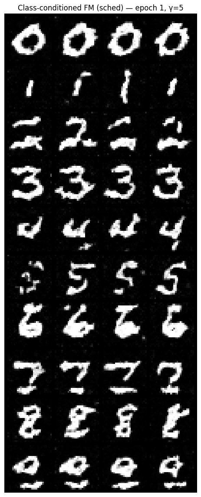
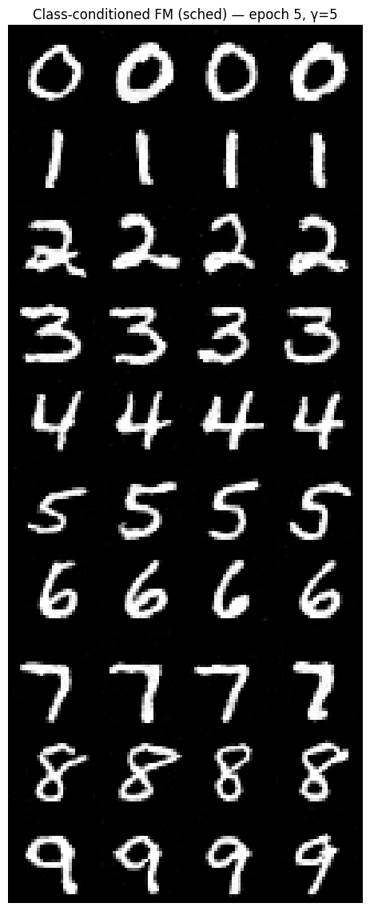

Without the scheduler
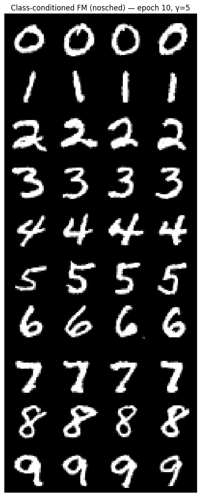
The tradeoff
What does the scheduler actually buy us? Without it, a constant lr of 1e-3 gives results about as good as the scheduled run by epoch 10. The scheduler's advantage is speed early on. It starts 10× higher, so it makes faster progress in the first epochs, then decays so it can still settle at the end. The cost is that the very first steps at 1e-2 are unstable, which is the spike in the loss curve. A constant high rate would keep bouncing around, and a constant low rate is stable but slower to get going. The scheduler gets the fast start of the high rate and the clean finish of the low one.
What I Learned
The biggest takeaway was how simple the core idea is. Draw a straight line from noise to an image, learn the velocity along it, and then follow that velocity in small steps. Everything in Part A was a remix of that one Euler loop: change where it starts for editing, change the velocity for CFG, anagrams, and hybrids, or just change the prompt. Part B showed me why the small steps matter. A model that tries to jump straight from noise to a digit can only ever learn the average digit, but a model that learns the velocity at every t can actually generate new ones.